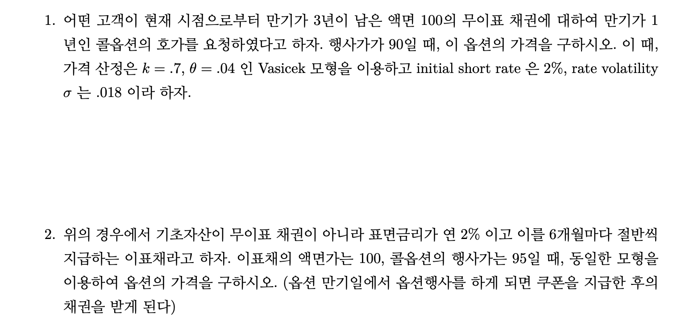
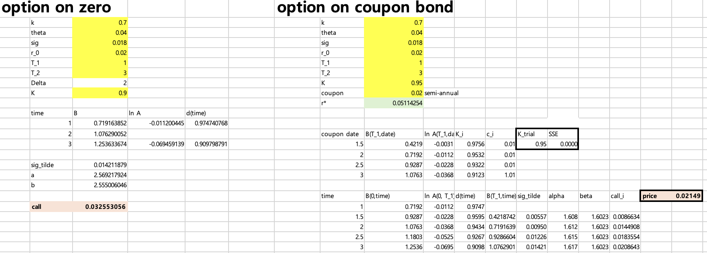
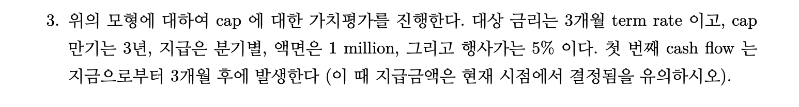
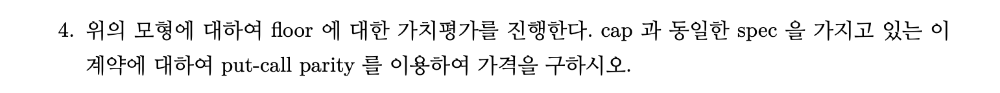
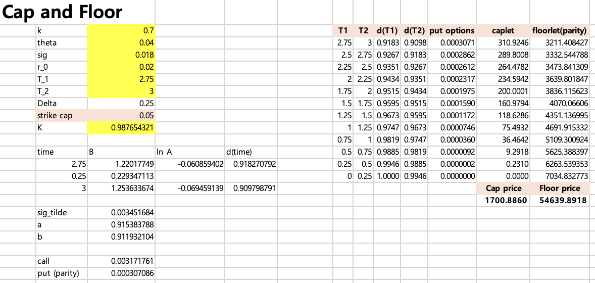
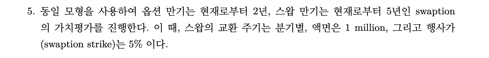
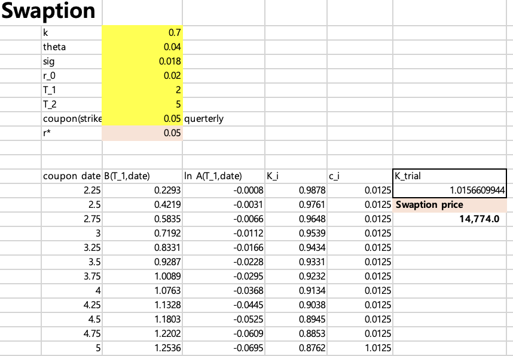

이자율파생상품 과제3
20249132 김형환
Question 1,2

Answer : (1) 3.26 , (2) 2.15
Vasicek 모형을 따르는 금리는 \(dr_t=K(\theta-r_t)dt+\sigma dW_t\)로 표현됩니다.
무이표채에 대한 콜옵션가격 \(P_0^{call}(r) = E[e^{-\int_0^{T_1}r_udu}max(d_{T_1}(T_2)-K,0)]\)이고,
T1-forward measure로 integral transform(laplace)을 통해 이를 정리하면, BSM과 유사한 형태로 정리할 수 있습니다.
또한, 이표채에 대한 콜옵션은 T1시점에 short rate \(r_{T_1}=r^*\)라는 특정 값으로 결정된다고 가정하고, 이에 대한 시뮬레이션을 통해 산출할 수 있습니다.
\(r^*\)를 이용하면 이표채에 대한 콜옵션은 여러개의 옵션의 합으로 나타낼 수 있고, 이들의 합으로 계산할 수 있습니다.
위의 내용을 이용하여 엑셀로 산출한 가격은 3.26 및 2.15입니다.

Question 3,4


Answer : (3) 1,700.89 , (4) 54,639.89
Cap가격은 각 cash flow의 caplet 가격의 합으로 계산되며,
각 caplet은 동일한 만기의 3개월 zero-coupon bond를 기초자산으로 하는 풋옵션으로 치환할 수 있습니다.
이에 따라 Q1의 방법론을 이용해 3개월 ~ 3년(36개월)의 12개 풋옵션(caplet)의 가격을 구하고, 이들의 합이 cap price가 됩니다.
caplet은 풋옵션이므로, floorlet(콜옵션) 간의 put-call parity가 성립해야 합니다.
각 만기별 d1, d2와 caplet 가격을 이용하여 floorlet 가격을 parity로 산출하고, 이들의 합이 floor price가 됩니다.

Question 5

Answer : 14,774.0
해당 swaption은 fixed rate receiver입니다.
옵션만기는 2년, 스왑만기는 5년이므로 reset date \(T_0=2\)이며,
이때의 swaption의 가격은 coupon bond의 가격을 이용하여 다음과 같이 표현할 수 있습니다.
\(P^{swaption}=E[e^{-\int_0^{T_0}rudu}max(P_{T_0}^{coupon=0.05}(T_S)-1,0)]\)
Q2의 coupon bond price 및 strike price = 0.05임을 이용하여 이를 산출하면, 가격은 14,774입니다.
